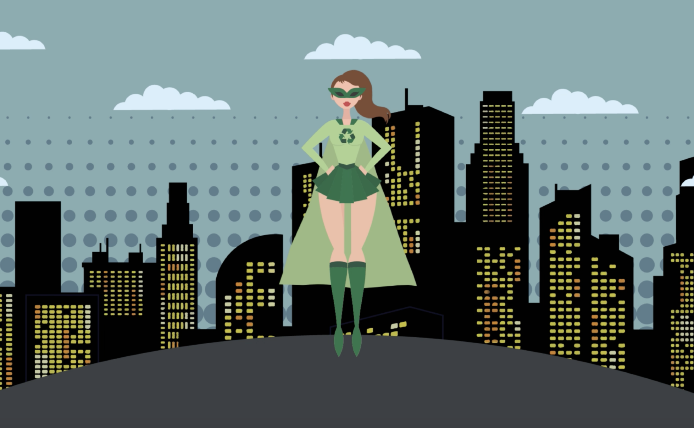
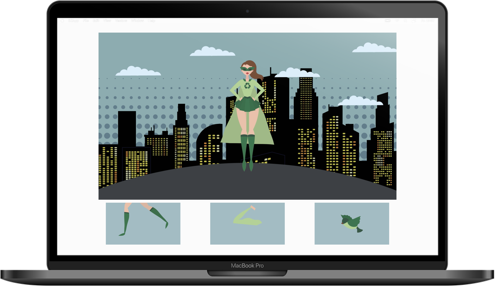

Recycle Superhero
Interface en Beweging
Voor deze opdracht heb ik een karakter ontworpen die drie acties uitvoert. De drie acties heb ik verwerkt in de drie knoppen onderin. Deze illustraties heb ik gemaakt met Adobe Illustrator. De animatie heb ik met Adobe AfterEffects gemaakt. In de video hieronder zijn de acties te zien.
 